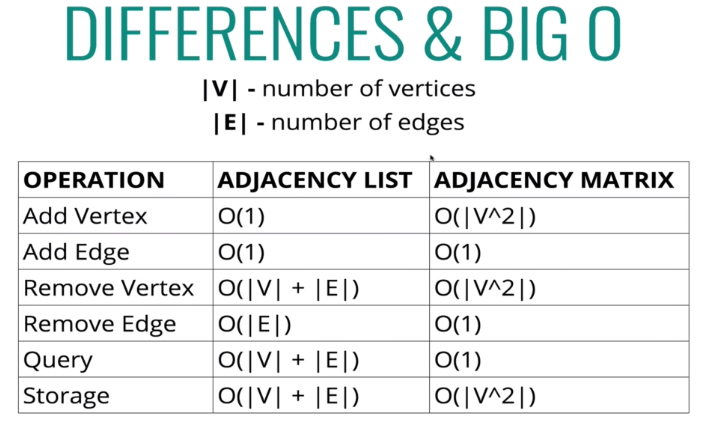
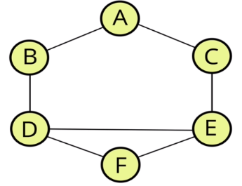

Graphs
Overview
Intro
- Graph data structures consist of finite (possibly mutable) set of vertices/nodes/points
- These can be together with a set of unordered pairs of these vertices for an undirected graph, or a set of ordered pairs for a directed graph
- A graph is a collection of nodes and connections
Uses for Graphs
- Social Networks - Friend networks
- Location / Mapping
- Routing Algorithms
- Visual Hierarchy
- File system optimisations
- Recommendations - "People also bought ... with this"
Types of Graphs
Terminology
- Vertex - a node
- Edge - a connection between nodes
- Weighted/Unweighted - values assigned to distances between vertices
- unweighted have no value assigned to edges, weighted does
- Directed/Undirected - directions assigned to distance between vertices
- Undirected graph has no defined direction between vertices, two-way connections
Representing a Graph
Two methods; Adjacency matrix or an adjacency list. A matrix uses a table showing 0 or 1 to represent edges bewteen vertices. A list uses a list/array, each vertex represented by an index, connections are stored in another array i.e. vertex 3 has connections [1,2,5]. Could also use a hash table to store key-value pairs (not limited to numerical values)

- adjacency list
- Can take up less space (in sparce graphs low in connections)
- Faster to iterate over all edges
- can be slower to lookup specific edge
- Adjacency Matrix
- Takes up mroe space (in sparse graphs)
- Slower to iterate over all edges
- Faster to lookup specific edge
Creating a graph using an Adjacency List
Defining the Class
Creating the addVertex(vertex) method
- Accepts a name of a vertex
- adds a key to the adjacency list with the name, settings the value to be an empty array
Creating the addEdge(vertex1, vertex 2) method - adding connections
- Accepts two vertices v1 and v2
- finds the key in adjacency list of v1 and pushes v2 into the array
- also finds key of v2 in adjacency list and pushes into v1
- To create a directed graph, would only add edge in one and not both directions
Creating the removeEdge(v1, v2) method
- accepts two vertices
- reassigns key of v1 to not contain v2
- likewise for v2
- filter method only keeps items in the array based on the conditional stated
Creating the removeVertex(vertex) method
- Accepts a vertex to remove
- loops as long as there are any other vertices in the adjacency list for that vertex
- uses the removeEdge function
- Deletes the key in the adjacency list
Graph Traversal
Intro
Graph Traversal Uses
- Peer to peer networking
- Web crawlers - following links on a webpage
- Finding closest matches / recommendations
- Shortest path problems; GPS, solving mazes...

Depth First Traversal
Explore as far down as possible one branch before backtracking. Depth first searching means visiting the starting vertex's neighbours, it explores and continues down the path before searching the other neighbour vertex
DF Traversal - Recursive code DFSRecursive(vertex)
- Function accepts a starting vertex
- visited vertex are stored in an array to return at the end
- an object is created to keep track of and store the visited vertices
- created a helper funciton to accept a vertex
- the function returns early if the vertex is empty
- places the vertex it accepts into the visited object and pushes the vertex into the results array
- loops over all the values in the adjacencyList for that vertex (array of edges)
- if these values have not been visited, helper function recursively invoked with that vertex
- helper function invoked with the starting vertex
Iterative code
- function accepts a starting vertex
- stack used to keep track of vertices (array)
- end results stored in an array, returned at the end
- visited vertex stored in an object
- add starting vertex to start and mark as visited
- while stack is not empty
- pop next vertex from stack
- if that vertex hasn't been visited, mark as visited, add to results list and push its neighbours to the stack
Breadth First traversal
Visit neighbours of current vertex first. When considering the adjacent list, not following the edges along, but completing the connections at each vertex first
creating the BFT(vertex) method
- function accepts a starting vertex
- a queue (array) starting with the vertex
- results array stores the visited vertex
- object stores if the vertex has been visited
- loop while there is something in the queue
- remove the first vertex from the queue and push it into the results array
- loop over each vertex in adjacency list for the vertex visiting
- if not inside the visited object, marked as visited and enqueue that vertex (shift())